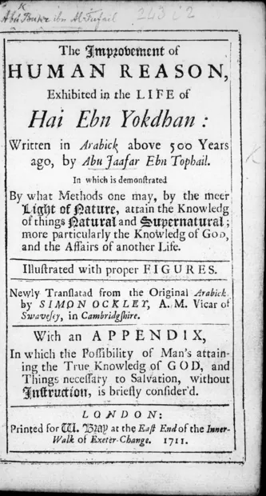

حي بن يقظان
Hayy bin Yaqzhan (Inggris)
Baca Hayy bin Yaqzhan (Inggris) (حي بن يقظان) karya Ibn Tufayl · tr. Simon Ockley (1708) secara gratis di Maktabah Ilmu: teks Inggris. Tanpa daftar, tanpa iklan.
Buka kitab iniLihat lemari ilmu
Baca Hayy bin Yaqzhan (Inggris) (حي بن يقظان) karya Ibn Tufayl · tr. Simon Ockley (1708) secara gratis di Maktabah Ilmu: teks Inggris. Tanpa daftar, tanpa iklan.
Buka kitab iniLihat lemari ilmu